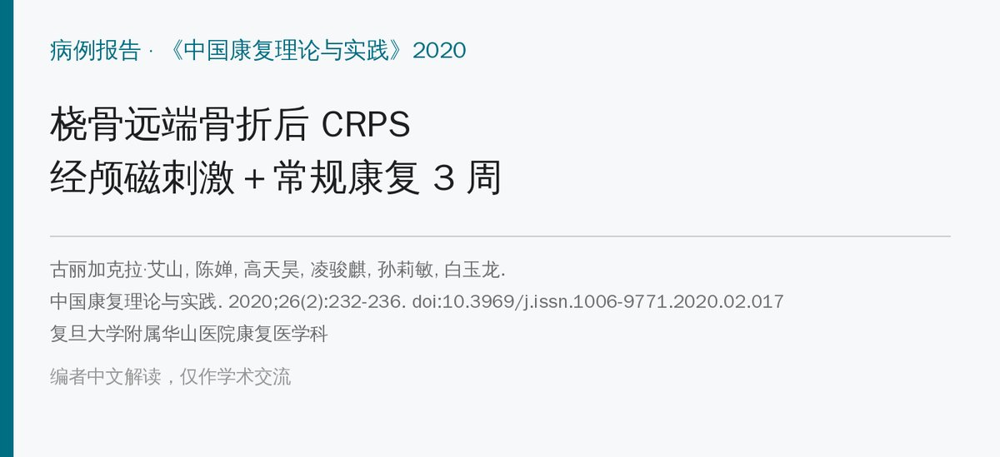
🔖原文信息（编者重排）
📚 文献信息
▪ 古丽加克拉·艾山, 陈婵, 高天昊, 凌骏麒, 孙莉敏, 白玉龙. 重复经颅磁刺激联合常规康复对桡骨远端骨折后复杂区域性疼痛综合征Ⅰ型患者上肢功能影响 1 例报道[J]. 中国康复理论与实践, 2020, 26(2): 232-236. doi:10.3969/j.issn.1006-9771.2020.02.017
▪ 作者单位：复旦大学附属华山医院康复医学科
▪ 文章类型：病例报告（1 例，治疗 3 周）
• 67 岁女性桡骨远端骨折，石膏固定后手腕肿痛反而加重、皮温升高、皮肤发红，诊断为 Ⅰ型复杂区域疼痛综合征（CRPS）
• 治疗 3 周：药物＋重复经颅磁刺激（rTMS）（大脑运动皮层高频＋颈 7 棘突旁低频）＋淋巴引流＋理疗＋运动和作业治疗
• 疼痛 VAS 8 → 2 分，改良 Barthel 指数 85 → 100 分，前臂旋转 55° → 90°，腕屈伸 20° → 42°
• 但同时用了很多种治疗、没有对照，无法判断 rTMS 本身贡献了多少
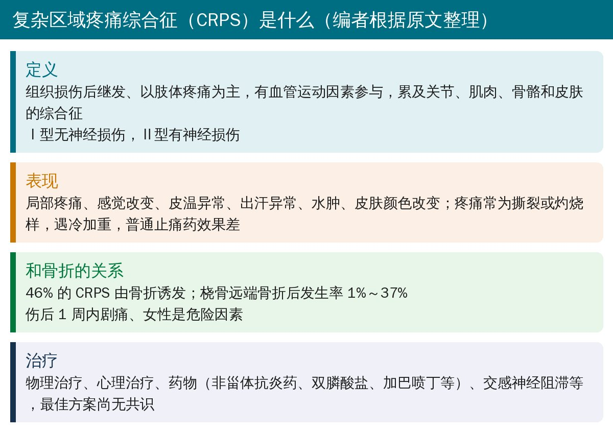
🔖背景（编者根据原文整理）
桡骨远端骨折是老年人最常见的骨折。骨折后出现 CRPS，会让肿胀、疼痛雪上加霜，普通止痛药效果差，进而导致肢体僵硬、影响睡眠和工作。原文提到，伤后 1 周内的剧痛是发生 CRPS 的危险因素，女性发生率明显高于男性。
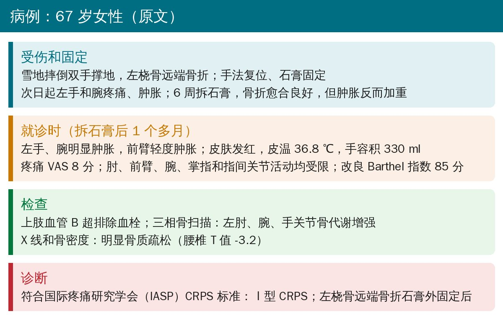
🔖病例经过（据原文整理）
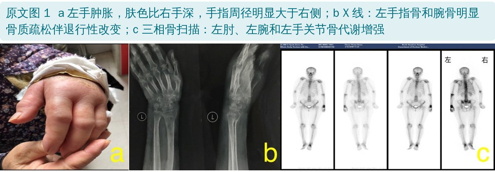
🔖原文图 1：左手外观、X 线和骨扫描
这个病例的典型线索是：骨折已经愈合，肿痛却越来越重，还伴有皮温升高、皮肤发红、关节普遍僵硬。上肢血管 B 超排除了血栓，三相骨扫描显示患侧多个关节骨代谢增强，符合国际疼痛研究学会（IASP）的 CRPS 诊断标准。
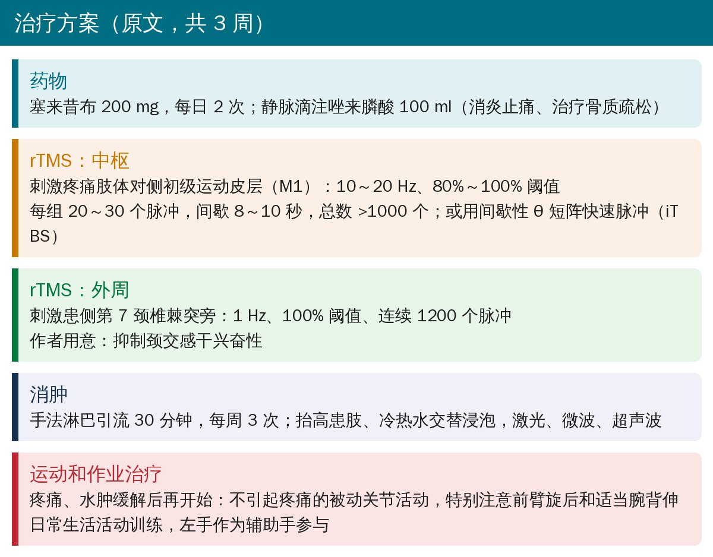
🔖治疗方案（据原文整理）
治疗顺序值得注意：就诊时疼痛、水肿太明显，没法做主动活动和关节活动度训练，所以先用药物、rTMS 和淋巴引流控制疼痛和水肿，等缓解后再开始不引起疼痛的被动关节活动，并让左手作为辅助手参与日常生活。
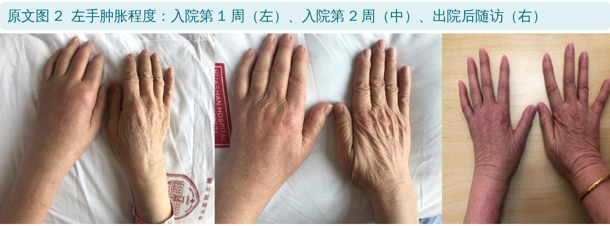
🔖原文图 2：左手肿胀的变化
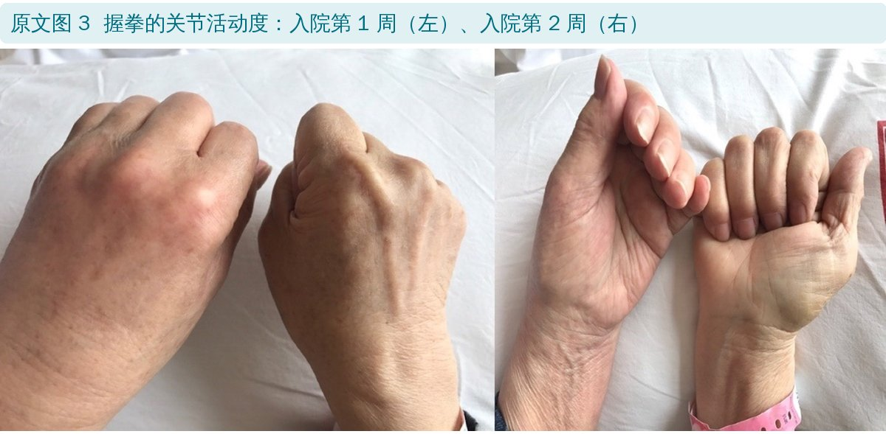
🔖原文图 3：握拳的变化
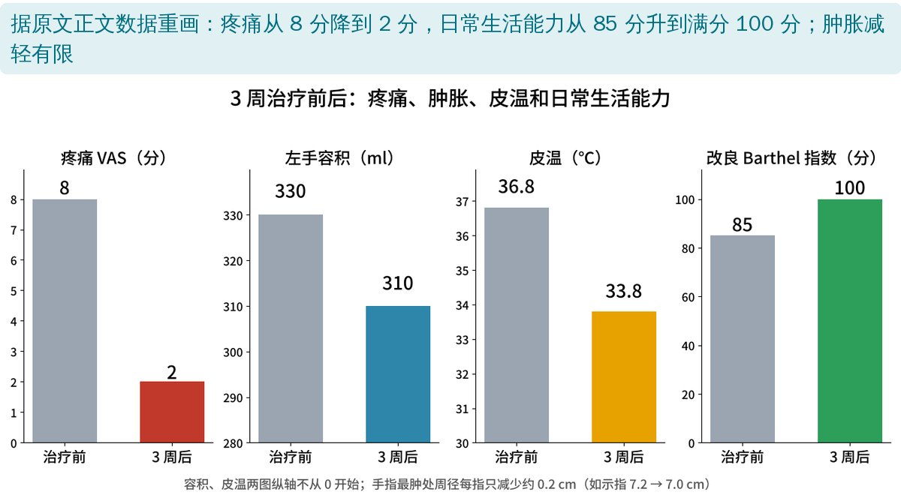
🔖疗效指标（据原文正文重画）
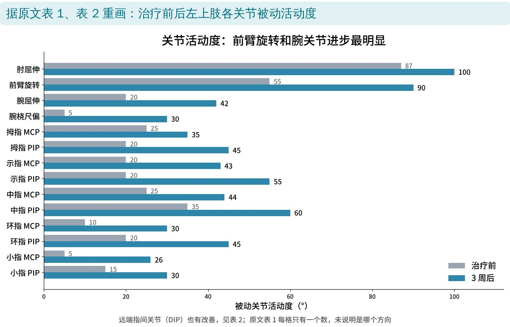
🔖关节活动度（据原文表 1、表 2 重画）
原文表 1：肘、前臂、腕关节被动活动度（°）
| 肘屈曲/伸展 | 前臂旋前/旋后 | 腕屈曲/伸展 | 腕桡偏/尺偏 | |
|---|---|---|---|---|
| 治疗前 | 87 | 55 | 20 | 5 |
| 治疗后 | 100 | 90 | 42 | 30 |
原文表 2：手指关节被动活动度（°，治疗前 → 治疗后）
| MCP | PIP | DIP | |
|---|---|---|---|
| 拇指 | 25 → 35 | 20 → 45 | — |
| 示指 | 20 → 43 | 20 → 55 | 15 → 40 |
| 中指 | 25 → 44 | 35 → 60 | 0 → 35 |
| 环指 | 10 → 30 | 20 → 45 | 10 → 20 |
| 小指 | 5 → 26 | 15 → 30 | 10 → 20 |
MCP＝掌指关节，PIP＝近端指间关节，DIP＝远端指间关节。
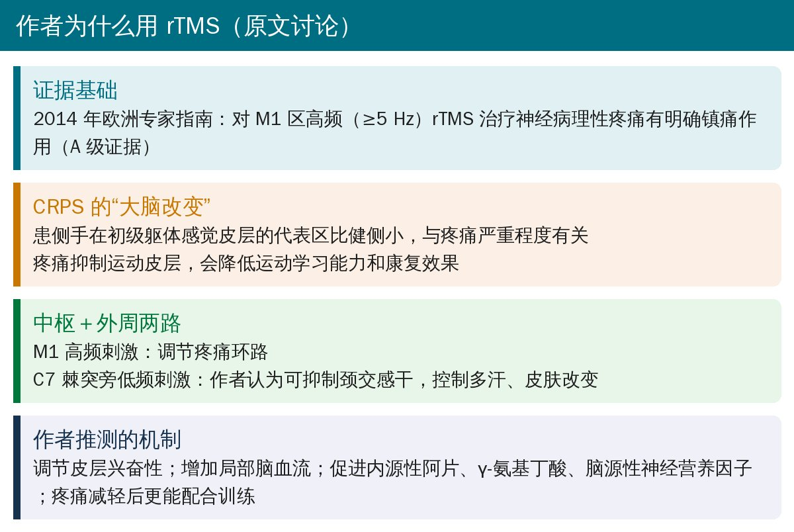
🔖作者的思路（据原文讨论整理）
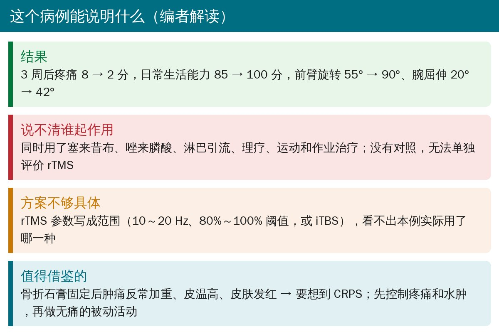
🔖编者解读
• 单个病例、治疗只有 3 周，没有长期随访；改善可能部分来自 CRPS 的自然病程
• 药物（塞来昔布、唑来膦酸）、淋巴引流、理疗、运动和作业治疗同时进行，无法拆分 rTMS 的作用
• 颈 7 棘突旁低频 rTMS“抑制颈交感干”是作者的推测，原文没有给出客观的交感功能指标
• rTMS 参数写成范围（10～20 Hz、80%～100% 阈值、“10～15 次治疗或 iTBS”），而“每天 1 次、治疗 3 周”又不止 15 次，看不出本例实际方案
• 表 1 表头写“屈曲/伸展”“旋前/旋后”等，每格却只有一个数
• 讨论部分的参考文献编号与内容错位（如“伤后 1 周内剧痛”一句标 [19]，实为 [18]）
• 骨折石膏固定期间或拆除后，肿痛不减反增、皮温高、皮肤发红、关节普遍僵硬 → 要想到 CRPS，先排除血栓
• 急性期以控制疼痛和水肿为先：淋巴引流、抬高患肢等；缓解后再做不引起疼痛的被动活动，避免“越痛越练”
• 让患手作为辅助手参与日常生活，减少废用
• rTMS 可作为综合方案的一部分，但需要有设备和资质的机构；参数应参照指南
欢迎关注骨科康复小黄公众号，获取更多物理治疗的专业知识！
📄参考文献：
古丽加克拉·艾山, 陈婵, 高天昊, 凌骏麒, 孙莉敏, 白玉龙. 重复经颅磁刺激联合常规康复对桡骨远端骨折后复杂区域性疼痛综合征Ⅰ型患者上肢功能影响 1 例报道[J]. 中国康复理论与实践, 2020, 26(2): 232-236.
原文未标注开放获取许可，版权归原作者和期刊所有。本文为非商业的学术交流解读：原文图 1～3 引自原文，图像未作修改，说明见图注；疗效图和活动度图由编者根据原文数据重画，整理卡为编者根据原文撰写。仅供学习交流，如有侵权请联系删除。